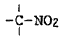
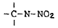
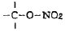
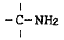
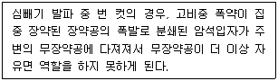
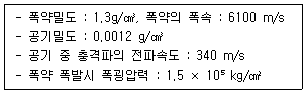
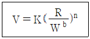
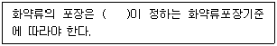

화약류관리산업기사 (2015-03-08 기출문제)
1과목: 일반화약학
1. 다음 중 질산에스테르에 속하는 것은?
- C6H2(NO2)3OH
- C6H2CH3(NO2)3
- C3H5(ONO2)3
- NaNO3
(정답률: 알수없음)

2. 폭약의 시험방법에 대한 설명으로 옳은 것은?
- 마찰 감도시험은 폭약의 동적작용 효과를 측정하는 시험이다.
- 내열시험은 폭약의 위력을 측정하는 시험이다.
- 폭속시험은 폭약의 감도를 측정하는 시험이다.
- 가열시험은 폭약의 안정도를 측정하는 시험이다.
(정답률: 알수없음)
3. 인체의 정전 용량을 0.003μF로 하고, 이것이 10000V로 대전하였다고 가정하면 대전에너지는 몇 J 인가?
- 0.015
- 0.15
- 1.5
- 15
(정답률: 알수없음)
4. 휘발성이 있는 담황색 내지 분홍색 액체로서 –20℃의 기온에서도 잘 동결되지 않는 것은?
- 피크르산
- 니트로글리콜
- TNT
- 헥소겐
(정답률: 알수없음)
5. 50% 다이너마이트의 약경이 40mm, 약량이 125g이다. 처음 순폭도는 8 이었다. 얼마 후 다시 시험하였더니 순폭거리가 200mm 이었다. 순폭도는 얼마나 감소하였는가?
- 1
- 2
- 3
- 4
(정답률: 알수없음)
6. 혼합 다이너마이트 중 니트로글리세린을 질산나트륨과 톱밥 등의 활성흡착제에 혼합한 반교질상의 고성능 다이너마이트는?
- 규조토 다이너마이트
- 암모니아 다이너마이트
- 블라스팅 젤라틴 다이너마이트
- 스트레이트 다이너마이트
(정답률: 알수없음)
7. 탄광 내에서 발파시 폭발의 원인이 되는 가스는?
- CO2
- O2
- CH4
- N2
(정답률: 알수없음)
8. 화약류와 관련한 화학결합 물질로 가장 거리가 먼 것은?




(정답률: 알수없음)
9. 산소공급제로만 나열되어 있는 것은?
- 디니트로나프탈렌, 목분, 전분
- 질산암모늄, 니트로글리세린, 나프탈렌
- 과염소산암모늄, 목분, 전분
- 질산암모늄, 과염소산암모늄, 질산칼륨
(정답률: 알수없음)
10. C3H5(NO3)3 제조법이 아닌 것은?
- 슈미드-마이너스너법(Schmid-Meisser process)
- 비아지법(biazze process)
- 제트 인젝숀법(jet ijection process)
- 톰슨법(thomson process)
(정답률: 알수없음)
11. 화약류 안정도시험을 한 결과 기준에 미달하는 경우의 처리방법은?
- 폐기 처리
- 수선 후 사용
- 즉시 사용 처리
- 별도 보관 후 사용
(정답률: 알수없음)
12. 도화선 시험법이 아닌 것은?
- 납판 시험
- 내수성 시험
- 점화력 시험
- 연소초시 시험
(정답률: 알수없음)
13. Tetryl의 화학식으로 옳은 것은?
- (CH2O2)3
- C6H2(NO2)4NCH3
- C6H2(NO2)3CH3
- C10H6(NO2)2
(정답률: 알수없음)
14. 혼합 화약류만으로 나열된 것은?
- TNT, NG
- dynamite, penthrite
- carlit, ANFO폭약
- NG, Black power
(정답률: 알수없음)
15. 감열소염제로 주로 사용되는 것은?
- 질산암모늄
- 니트로글리세린
- 규소철
- 식염
(정답률: 알수없음)
16. 도폭선의 심약으로 사용할 수 없는 것은?
- TNT
- PENT
- 뇌홍
- 헥소겐
(정답률: 알수없음)
17. 뇌홍 폭분은 뇌홍과 염소산칼륨을 어떤 비율로 혼합한 것인가? (단, 뇌홍 : 염소산칼륨의 비율이다.)
- 80 : 20
- 20 : 80
- 40 : 60
- 60 : 40
(정답률: 알수없음)
18. 순폭시험에 있어서 순폭도를 나타내는 값은?
- 최대 순폭 거리를 약포경으로 나눈 값
- 최대 순폭 거리에서 약포경을 뺀 값
- 약포경과 최소 순폭 거리를 곱한 값
- 약포경을 최대 순폭 거리로 나눈 값
(정답률: 알수없음)
19. 화약이 폭발하여 가장 큰 압력을 나타낼 때까지의 시간 구배에 대한 시험에 해당하는 것은?
- 유리산 시험
- 낙추 시험
- 연판 시험
- 맹도 시험
(정답률: 알수없음)
20. 펜트리트를 심지실에 묻혀서 만든 2종 도폭선은?
- P 도폭선
- H 도폭선
- P/A 도폭선
- T 도폭선
(정답률: 알수없음)
2과목: 발파공학
21. 자유면에 있어서의 반사응력파에 의한 인장파괴이론의 설명으로 틀린 것은?
- 폭원에서 폭약이 폭발하면 압축충격을 암반에 발생시켜서 압축충격파가 전파하게 된다.
- 압축충격파의 파장이 짧을수록 얇은 판모양으로 암반이 파괴 된다.
- 암석은 압축보다는 인장 하에서 파괴가 쉽게 발생한다.
- 암반은 입사할 때의 압축충격파에는 그다지 파괴되지 않아도 반사할 때의 인장충격파에는 보다 많이 파괴된다.
(정답률: 알수없음)
22. 작업 마무리 면의 암반을 보호하고 매끈한 굴착면을 형성하기 위하여 굴착 예정선에 발파공을 천공하고 이 공을 본발파 보다 먼저 발파시키는 공법은?
- 쿠션 발파(Cushion Blasting)
- 프리 스플리팅(Pre-splitting)
- 트림 발파(Trim Blasting)
- 와이드 스페이스 발파(Wide space Blasting)
(정답률: 알수없음)
23. 전기발파의 일반적인 작업 순서로 맞는 것은?
- 경계 – 장전 – 전색 – 대피 - 점화
- 장전 – 전색 – 대피 – 경계 - 점화
- 장전 – 전색 – 점화 – 대피 - 경계
- 장전 – 경계 – 대피 – 전색 – 점화
(정답률: 알수없음)
24. 발파소흠 측정방법으로 옳지 않은 것은? (단, 소음·진동 공정시험기준에 의함)
- 소음계의 마이크로폰은 측정위치에 받침장치를 설치하여 측정하는 것을 원칙으로 한다.
- 손으로 소음계를 잡고 측정할 경우 소음계는 측정자의 몸으로부터 0.5m 이상 떨어져야 한다.
- 소음계의 마이크로폰은 주소음원 방향으로 향하도록 하여야 한다.
- 풍속이 2m/s를 초과할 때는 발파소음을 측정하여서는 안된다.
(정답률: 알수없음)
25. 발파해체공법에 대한 설명으로 옳지 않은 것은?
- 공사 기간의 단축 및 공사비용이 경제적이다.
- 철탑, 건물 등 적용 대상 구조물이 다양하다.
- 지속적인 소음 및 분진 발생이 없다.
- 대상체 주변 환경에 크게 영향을 받지 않는다.
(정답률: 알수없음)
26. 계단식 발파에서 발파공 지름 76mm, 계단높이 6m, 최대 저항선 3m, 공간격 2m인 경우 바닥면의 뿌리 깎기를 잘하기 위한 서브드릴링의 적정 깊이는?
- 1.8m
- 1.2m
- 0.9m
- 0.6m
(정답률: 알수없음)
27. 전기발파의 병렬결선에 대한 설명으로 옳지 않은 것은?
- 전원에 전등선, 동력선을 이용할 수 있다.
- 전기뇌관의 저항이 조금씩 다르더라도 상관없다.
- 결선이나 뇌관에 불량한 것이 있으면 그것만 불발되어 불발시 조사가 쉽다.
- 가스나 탄진의 위험이 있는 곳에서는 사용할 수 없다.
(정답률: 알수없음)
28. 터널발파에서 평행공 심빼기(Parallel Cut)의 특징으로 옳지 않은 것은?
- 천공기술에 숙련을 필요로 한다.
- 파쇄석의 비산거리가 비교적 적고, 막장 부근에 집중되므로 파쇄석 처리가 용이하다.
- 천공이 근접되므로, 폭약이 유폭되거나 사업현상으로 잔류약이 발생될 수 있다.
- 불발 및 Cut0off 등이 밠애하지 않는 심빼기 방법이다.
(정답률: 알수없음)
29. 시험발파에서 최소저항선 0.6m, 장약량 0.5kg을 사용하여 발파한 결과, 누두반경이 0.72m인 누두공이 생성되었다. 최소저항선을 동일하게 할 때 표준발파가 되기 위한 장약량은 얼마인가?
- 0.33kg
- 0.40kg
- 0.45kg
- 0.52kg
(정답률: 알수없음)
30. Lilly의 발피지수(Blasting Index, BI)를 구성하는 요소가 아닌 것은?
- 암반강도
- 암반형태
- 절리간격
- 절리방향
(정답률: 알수없음)
31. 발파기가 갖추어야 할 조건으로 틀린 것은?
- 절연성이 좋을 것
- 파손되지 않도록 견고할 것
- 도난 방지를 위해 중량이고 대형일 것
- 메탄, 탄진에 안전할 것
(정답률: 알수없음)
32. 계단식 발파에서 공간격을 110cm, 계단의 높이를 3m로 하고 최소 저항선을 100cm로 하여 20개 공을 천공하여 발파하고자 한다. 이때 필요한 총장약량은? (단, 발파계수 C = 0.3 적용)
- 1.3kg
- 9.9kg
- 19.8kg
- 32.6kg
(정답률: 알수없음)
33. 발파진동과 폭풍압에 대한 설명으로 옳지 않은 것은?
- 발파진동의 파형은 복잡하나 자연지진의 파형은 비교적 단순하다.
- 발파진동을 감소시키기 위해서는 지연시간을 조절해 주는 것도 효과가 있다.
- 발파에 의한 폭풍압은 기후, 기압, 기온 등에 민감함 반응을 보이기도 한다.
- 폭풍압의 단위는 kg/cm2 등 이고, 진동은 cm/sec를 주로 사용한다.
(정답률: 알수없음)
34. 계단식 발파시 열과 열 사이의 지연시차에 따른 발파결과에 대한 설명으로 옳은 것은?
- 지연시차가 짧을수록 자유면에 대해 더 큰 암괴를 발생시킨다.
- 지연시치가 짤을수록 여굴량이 감소한다.
- 지연시치가 길수록 발파진동과 폭풍압이 크게 발생할 수 있다.
- 지연시차가 길소록 하부가 발파되지 않을 수 있다.
(정답률: 알수없음)
35. 다음에서 설명하는 발파 이상으로 맞는 것은?

- 소결 현상
- 오버행 현상
- 컷 오프 현상
- 공발 현상
(정답률: 알수없음)
36. 발파에 의한 소음의 경감대책으로 옳지 않은 것은?
- 기폭방법에서 정기폭보다는 역기폭을 사용한다.
- 전색효과가 좋은 전색물을 사용하여 완전한 전색을 실시한다.
- 도폭선의 사용을 피한다.
- 최소저항선을 가급적 짧게 하여 발파한다.
(정답률: 알수없음)
37. 하우저(Hauser) 발파식에서 발파계수에 대한 설명 중 틀린 것은?
- 발파계수는 암석계수, 폭약계수, 전색계수의 곱으로 나타낸다.
- 암석계수는 암석 약 1m3를 발파할 때 필요로 하는 폭약량을 의미한다.
- 강력한 폭약일수록 폭약계수 값은 작게 된다.
- 전색계수는 발파공에 모래나 점토로 된 메지를 다짐한 정도를 나타내는 계수로 불완전한 전색 상태에서 전색계수는 1보다 작다.
(정답률: 알수없음)
38. 암반의 손상 방지를 위한 장약방법이나 디커플링 장약(decoupling charge)법이다. 다음과 같은 조건에서 디커플링 된 폭약의 폭굉시 폭약과 공기와의 경계면에서 발생하는 최고압력은 얼마인가?

- 13.07 kg/cm2
- 15.43 kg/cm2
- 17.37 kg/cm2
- 19.28 kg/cm2
(정답률: 알수없음)
39. 다음은 안전발파설계에 흔히 사용되는 경험적 발파진동식이다. 이 식에 대한 설명으로 옳지 않은 것은?

- R/Wb를 환산거리로 정의한다.
- b는 지반을 구성하는 암석의 종류에 따른 값이다.
- k와 n은 지반의 진동감쇠특성을 나탄내다.
- W는 각 발파공의 지발당 장약량을 나타낸다.
(정답률: 알수없음)
40. 수직천공과 비교하여 경사천공의 장점이 아닌 것은?
- 정확한 경사각 유지용이
- 1 자유면에서 문제성 감소
- 자유면 반대방향의 후면 파괴감소
- 낮은 계단발파에서 양호한 파쇄율
(정답률: 알수없음)
3과목: 암석역학
41. 시추공 내에 변형계측기를 설치한 후 시추공 주변을 오버코어링하여 발생한 암반변형으로부터 초기응력을 유추하는 방법은?
- 응력해방법
- 수압파쇄법
- 응력보상법
- AE 시험법
(정답률: 알수없음)
42. 지표면에서부터 굴착하여 소정의 위치에 지하 구조물을 시공한 다음 그 윗부분을 되메워 지표면을 복구하는 공법은?
- NATM 공법
- TBM 공법
- 개착 공법
- 쉴드 공법
(정답률: 알수없음)
43. 암반의 강도를 계산하기 위하여 Hoek-Brown의 경험식을 사용할 때 필요한 강도정수 m과 s를 추정하기 위하여 사용할 수 있는 체계는?
- RQD
- BGD
- JRC
- RMR
(정답률: 알수없음)
44. 탄성계수 값이 2×105 kg/cm2 인 암석시편에 일추압축 하중을 가하여 변형률이 0.002 발생하였다면 이 시편의 단위 체적속에 축적된 탄성변형률에너지는 얼마인가?
- 0.3 kg/cm2
- 0.4 kg/cm2
- 0.9 kg/cm2
- 1.8 kg/cm2
(정답률: 알수없음)
45. 터널의 안정성을 판단하기 위한 계측 항목이 아닌 것은?
- 내공변위 측정
- 터널내 관찰조사
- 록볼트 축력측정
- 바닥침하 측정
(정답률: 알수없음)
46. 암석파괴이론 중 중간 주응력이 파괴조건에 고려된 이론은?
- Mohr-Couldmb 이론
- Tresca 이론
- Griffith 이론
- Huber-Hencky 이론
(정답률: 알수없음)
47. 암반 불연속면의 마찰각이 30°, 사면의 주향과 경사가 N30W, 42SW 일 때 다음 중 평면파괴가 발생할 수 있는 불연속면의 상태(경사/경사방향)는?
- 30/180
- 35/230
- 40/280
- 45/330
(정답률: 알수없음)
48. 암반분류법인 Q-system에 대한 설명으로 옳지 않은 것은?
- 암반블록간의 전단강도는 중요한 척도로 간주된다.
- 현장응력을 고려한다.
- 절리의 방향성을 고려한다.
- 터널 굴착 시 보다 구체적이고 체계적인 보강방안의 제시가 가능하다.
(정답률: 알수없음)
49. 터널 시공시 발생하는 이완하중과 관련된 설명으로 틀린 것은?
- 절리빈도가 높을수록 이완하중이 크다.
- 지반의 풍화가 많이 될수록 이완하중이 크다.
- 암반의 강도가 클수록 이완하중이 크다.
- RQD값이 작을수록 이완하중이 크다.
(정답률: 알수없음)
50. 지하수 상태는 완전 건조, 절리 방향에 대해 매우 유리한 조건 하의 암반에 대핸 RMR89을 산정한 결과, 그 값은 45점이었다. 이 암반에 대한 지질강도지수(GSI) 값은?
- 40
- 45
- 50
- 55
(정답률: 알수없음)
51. 암석의 반발경도를 측정하는 시험장치인 쇼어 경도 측정기(Model D)의 시험방법으로 잘못된 것은? (단, 국제암반역학회(ISMR)에서 제안한 시험방법)
- 시험 전 표준 시험 블록에 최소 5회 이상 경도를 측정하여 보정한다.
- 타격 위치를 조정하여 측정 오류가 발생하지 않도록 타격 간격은 5mm 미만으로 조정한다.
- 측정한 지점에서 다시 측정하여서는 안된다.
- 한 시험편에 대해 최소한 20회 이상 시험을 실시하고, 쇼어 경도는 측정값들의 평균값으로 한다.
(정답률: 알수없음)
52. 암석의 역학적 성질 중에서 크리프(creep)현상이란?
- 일정한 응력하에서 변형률이 시간에 따라 증가하는 현상
- 일정한 변형률하에서 응력이 시간에 따라 증가하는 현상
- 응력-변형률이 비례하는 현상
- 응력-변형률이 반비례하는 현상
(정답률: 알수없음)
53. 암반에 존재하는 불연속면 중 어느 면을 경계로 양쪽 암석이 상대적으로 불연속하게 변위가 일어난 부분을 가리키는 것은?
- 절리
- 편리
- 층리
- 단층
(정답률: 알수없음)
54. Griggith 파괴이론에 따르면 전단강도는 인장강도의 몇 배가 되는가?
- 2배
- 4배
- 6배
- 8배
(정답률: 알수없음)
55. Maxwell 모형과 Kelvin 모형을 직렬로 연결한 것으로서, 순간적인 탄성 변형과 1차 및 2차 크리프 거동을 나타낼 수 있기 때문에 암석의 유동학 모델에 많이 이용되는 역학적 모형은 무엇인가?
- Bingham 모형
- Burgers 모형
- St. Venant 모형
- Voight 모형
(정답률: 알수없음)
56. 평면응력상태에서 x면에 작용하는 응력(σx)이 20MPa, y면에 작용하는 응력(σy)이 30MPa이다. 이때, 포아송비(ν)가 0.3, 탄성계수(E)가 100MPa 이라면 z방향의 변형률은?
- 0
- -0.15
- -0.2
- -0.3
(정답률: 알수없음)
57. 암석의 주위를 큰 압력으로 봉압하는 경우 응력-변형률 곡선의 기울기가 갑자기 저하한 후 상당히 변형한 후에 파괴되는 현상은?
- 취성파괴
- 전단파괴
- 지연파괴
- 연성파괴
(정답률: 알수없음)
58. 직경 40mm, 두께 30mm인 코어 시험편에 대해 축방향 점하 중강도시험을 실시한 결과 15kN에서 파괴가 발생하였다. 이 시험편의 인장강도를 추정하면 얼마인가?
- 4.39 MPa
- 6.25 MPa
- 7.02 MPa
- 8.78 MPa
(정답률: 알수없음)
59. 롤볼트의 적정 시공 여부를 검사하기 위한 시험은?
- 반발경도시험
- Goodman 잭 시험
- 인발시험
- 표준관입시험
(정답률: 알수없음)
60. 사면 안정화 공법 중 안전율증가법(억지공)에 해당되지 않는 것은?
- 배수공법
- 어스앵커공법
- 옹벽공법
- 압성토공법
(정답률: 알수없음)
4과목: 화약류 안전관리 관계 법규
61. 동일차량에 함께 실을 수 있는 화약류 중 “폭약”과 함께 실을 수 없는 것은?
- 실탄·공포탄
- 도폭선
- 포경용 신관
- 특별용기에 들어 있는 전기뇌관
(정답률: 알수없음)
62. 화약류관리(제조)보안책임자가 될 수 없는 사람은?
- 20세의 여자
- 화약류관리(제조)보안책임자 면허를 갱신하지 않아 취소 후 6개월이 경과한 사람
- 총포·도검·화약류 등 단속법을 위반하여 벌금 50만원을 선고받고 2년이 경과한 사람
- 총포·도검·화약류 등 단속법을 위반하여 금고 이상 형의 집행유예를 선고받고 그 집행유예의 기간이 끝난날부터 1년 반이 지난 사람
(정답률: 알수없음)
63. 화약류제조보안책임자는 화약류의 제조작업에 관한 사항을, 화약류관리보안책임자는 화약류의 취급 전반에 관한 사항을 주관하되, 대통령령이 정하는 안전상의 감독업무를 게을리 한 경우 받는 벌칙은?
- 5년 이하의 징역 또는 2천만원 이하의 벌금의 형
- 5년 이하의 징역 또는 1천만원 이하의 벌금의 형
- 3년 이하의 징역 또는 700만원 이하의 벌금의 형
- 3년 이하의 징역 또는 500만원 이하의 벌금의 형
(정답률: 알수없음)
64. 화약류 운반용 디젤차의 구조기준 중 배기관의 배기가스 온도는 몇 도 이하로 유지하여야 하는가?
- 50℃
- 60℃
- 70℃
- 80℃
(정답률: 알수없음)
65. 꽃불류 사용의 기술상의 기준으로 옳은 것은?
- 쏘아 올리는 꽃불류는 반드시 30m 이상의 높이에서 퍼지도록 해야 한다.
- 꽃불류를 발사통안에 넣을 때는 끈 등을 사용하여 서시히 넣는다.
- 꽃불류가 불발이 되었을 때는 발사통에 많은 양의 물을 넣고 15분 이상 경과한 후에 접근하여 처리한다.
- 풍속이 초당 5미터 이상일 때에는 꽃불류의 사용을 중지해야 한다.
(정답률: 알수없음)
66. 지하 1급 저장소에 폭약 25톤을 저장하고자 할 때 지반의 두께기준으로 옳은 것은?
- 20m 이상
- 21.5m 이상
- 24m 이상
- 28m 이상
(정답률: 알수없음)
67. 화약류관리보안책임자의 수행 직무로 가장 관련이 없는 것은?
- 발파현장의 작업 보조자를 정한다.
- 발파 시 경계업무를 수행한다.
- 천공방법을 지시한다.
- 약실에 대한 화약류의 장전방버을 지시한다.
(정답률: 알수없음)
68. 화약류저장소에 흙둑을 쌓는 경우 흙둑의 설치 기준으로 틀린 것은?
- 흙둑은 저장소의 바깥쪽 벽으로부터 흙둑의 안쪽 벽 밑까지 1미터 이상 2미터 이내의 거리를 두고 쌓아야 한다.
- 저장소 출입구 쪽의 흙둑은 화약 운반용 지게차 등이 출입할 수 있도록 2미터 이상의 거리를 둘 수 있다.
- 흙둑의 경사는 45도 이하로 하고, 높이는 저장소의 지붕의 높이 이상으로 하며, 정상의 폭은 1미터 이상으로 해야 한다.
- 2개 이상의 저장소가 인접하여 중간의 흙둑을 같이 사용하는 때에는 그 흙둑에 통로를 설치하여 위급한 상황의 발생시 대피에 지장이 없도록 해야 한다.
(정답률: 알수없음)
69. 화약류 폐기의 기술상의 기준으로 옳지 않은 것은?
- 얼어 굳어진 다이너마이트는 완전히 녹여서 연소처리 하거나 500g 이하의 적은 양으로 나누어 순차로 폭발처리 할 것
- 도화선은 연소처리하거나 물에 적셔서 분해처리 할 것
- 화약류의 전량이 동시에 폭발하여도 위해가 생기지 아니하도록 폐기장소 주위에 높이 2m 이상의 방폭벽을 설치할 것
- 연소시키고자 하는 때에는 바람이 적은 날을 택하여 바람이 불어오는 쪽을 향하여 점화할 것
(정답률: 알수없음)
70. 동일 공실에 저장할 수 있는 화약류의 최대수량을 의미하는 용어는?
- 정체량
- 저장량
- 보유량
- 누적량
(정답률: 알수없음)
71. 화약류 운반 시 운반표지를 하지 않아도 되는 화약류의 수량으로 틀린 것은?
- 100개 이하의 공업용뇌관
- 5kg 이하의 폭약
- 1000개 이하의 미진동파쇄기
- 1000m 이하의 도폭선
(정답률: 알수없음)
72. 화약류를 운반하는 통로에 대한 기준으로 옳지 않은 것은?
- 차량으로 운반하는 때에는 그 차량의 폭에 3.5m를 더한 너비 이하의 도로를 통행하지 아니할 것
- 화기를 취급하는 장소 또는 발화성이나 인화성이 있는 물질을 쌓아둔 장소에 가까이 가지 아니할 것
- 번화가 그 밖에 사람의 왕래가 빈번하거나 사람이 많이 모인 곳을 지나가지 아니할 것
- 부득이 화략류르 싣고 시가지를 통과하는 때에는 1톤 이하의 적은 양으로 나누어 순차로 통과할 것
(정답률: 알수없음)
73. 화약류를 양도·양수하고자 하는 사람은 누구의 허가를 받아야 하는가?
- 주소지 또는 화약류 사용지를 관할하는 경찰서장의 허가를 받는다.
- 화약류 사용지를 관할하는 지방경찰청장의 허가를 받는다.
- 주소지를 관할하는 지방경찰청장의 허가를 받는다.
- 주소지를 관할하는 지방자치단체장의 허가를 받는다.
(정답률: 알수없음)
74. 다음 ( ) 안에 알맞은 내용은?

- 대통령령
- 국무총리령
- 행정자치부령
- 경찰청령
(정답률: 알수없음)
75. 화약류 판매업자가 공공의 안녕질서를 해할 염려가 있다고 믿을 만한 상당한 이유가 있어 이에 따른 개선명령을 했으나 3회 위반했을 경우 행정처분기준은?
- 허가취소
- 6월 효력정지
- 3월 효력정지
- 1월 효력정지
(정답률: 알수없음)
76. 화약류·취급소의 정체량으로 맞는 것은? (단, 1일 사용예정량 이하)
- 공업용뇌관 - 5000개
- 도폭선 - 10km
- 화약 - 600kg
- 폭약(초유폭약 제외) - 300kg
(정답률: 알수없음)
77. 저장소별 도폭선의 최대저장량으로 옳지 않은 것은?
- 1급저장소 : 2000km
- 2급저장소 : 1000km
- 3급저장소 : 1500m
- 간이저장소 : 1000m
(정답률: 알수없음)
78. 화약류의 취급방법으로 옳은 것은?
- 화약류를 취급하는 용기는 반드시 목재로 만들어진 견고한 용기여야 한다.
- 얼어서 굳어진 다이너마이트는 20℃ 이하의 온도가 유지되는 실내에서 누그러뜨린다.
- 사용에 적합하지 아니한 화약류는 즉시 폐기처리 해야 한다.
- 전기뇌관에 대한 도통, 저항시험 시 시험전류는 0.01A를 초과해서는 아니된다.
(정답률: 알수없음)
79. 재해의 예방 또는 공공의 안전을 위하여 행정자치부령이 정하는 바에 따라 경찰서장이 안전교육을 실시할 수 있는 사람으로 틀린 것은?
- 3급저장소 설치자
- 공기총 사격장 설치자
- 간이저장소 설치자
- 화약류관리보안책임자
(정답률: 알수없음)
80. 꽃불류의 사용허가신청의 경우 허가신청서에 첨부하여야 하는 서류에 해당하는 것은?
- 사용순서대장
- 사용계획서
- 폐기계획서
- 사용하고자 하는 화약류저장소의 설치허가증 사본
(정답률: 알수없음)